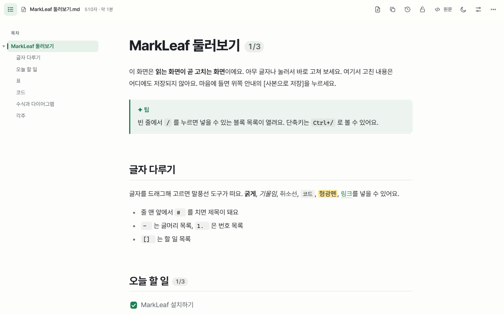
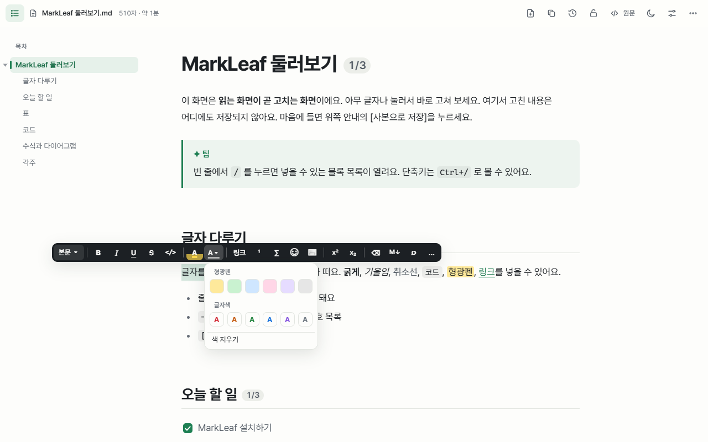
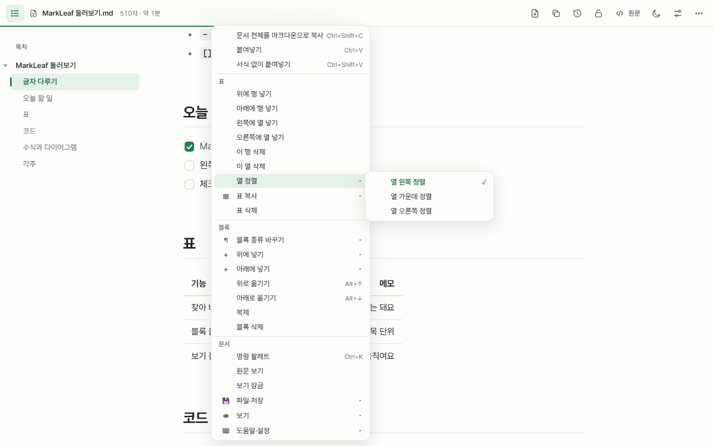
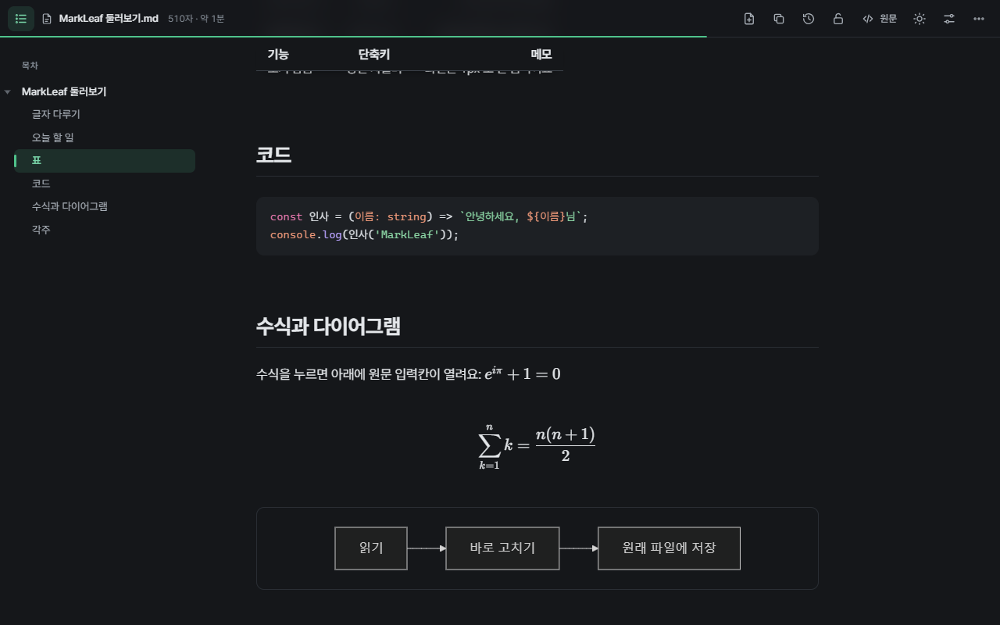

마크다운을 읽기 좋은 문서로, 보이는 그대로 고쳐 저장
MarkLeaf 는 무료 크롬 마크다운 뷰어·편집기입니다. .md 파일을 깔끔한 문서로 열고, 읽던 화면에서 바로 고친 뒤 원래 파일에 저장하세요.
크롬에 추가 — 무료가입 없음 · 서버 없음 · 문서는 내 컴퓨터를 떠나지 않습니다

MarkLeaf 가 다른 점
대부분의 마크다운 도구는 원문과 미리보기로 화면을 나눕니다. MarkLeaf 는 화면이 하나입니다. 읽는 화면이 곧 고치는 화면입니다.
끌어다 놓으면 바로 문서
로컬 .md 파일을 크롬에 끌어다 놓거나 GitHub 의 Raw 문서를 열면 제목·표·코드·수식·다이어그램이 바로 그려집니다.
보던 화면 그대로 고치기
글자를 누르고 입력하세요. / 로 블록을 넣고, 글자를 고르면 툴박스, 오른쪽 클릭은 표·링크·코드에 맞춘 메뉴가 열립니다.
고친 곳만 저장
원래 파일에 저장하면서 나머지 서식은 그대로 둡니다. 한 단어를 고치면 git diff 에 그 줄만 나옵니다.
브라우저에서 마크다운에 필요한 모든 것
마크다운 뷰어와 보이는 그대로 고치는 편집기를 확장 하나로.
화면을 떠나지 않는 서식
- 굵게·기울임·링크·형광펜·글자색 툴박스
/메뉴로 제목·할 일·표·알림 상자·토글- ⋮⋮ 손잡이로 블록 옮기기, 표 행·열 순서 바꾸기

문서를 아는 오른쪽 클릭 메뉴
- 누른 곳에 맞춘 표·링크·이미지·코드·제목 메뉴
- 찾아 바꾸기, 명령 팔레트, 집중 모드, 발표 모드

수식·다이어그램·다크 모드
- KaTeX 수식, Mermaid 다이어그램
- 50개 넘는 언어의 코드 하이라이트
- 테마 5종, 라이트·다크, 글꼴·본문 폭 설정

버전 기록과 안전한 저장
- 저장할 때마다 이 컴퓨터에 버전을 남겨 비교하고 되돌리기
- 다른 프로그램이 파일을 바꿨으면 덮어쓰지 않고 비교를 보여 줌
- PDF 또는 파일 하나로 된 HTML 로 내보내기
자주 묻는 질문
크롬에서 로컬 .md 파일은 어떻게 여나요?
MarkLeaf 를 설치하고 크롬 확장 프로그램 관리 → MarkLeaf 세부정보에서 "파일 URL에 대한 액세스 허용"을 켜세요(설치 후 열리는 안내 페이지에 버튼이 있습니다). 그다음 .md 파일을 크롬 창에 끌어다 놓거나 file:/// 주소로 열면 읽기 좋은 문서로 보입니다.
마크다운 파일을 고쳐서 다시 저장할 수 있나요?
네. 글자를 누르고 고치면 됩니다. 처음 저장할 때 크롬이 파일을 고르거나 폴더를 허용하라고 묻고, 그다음부터는 입력을 멈추면 자동으로 저장합니다. 고친 부분만 바뀝니다.
GitHub 에서도 되나요?
GitHub 의 Raw 버튼으로 연 마크다운 파일은 문서로 보입니다. 다른 사이트도 툴바 버튼에서 한 곳씩 허용할 수 있습니다.
내 문서가 어딘가로 전송되나요?
아니요. MarkLeaf 에는 서버·분석·추적 코드가 없고, 모든 글꼴과 라이브러리가 확장 안에 들어 있습니다. 개인정보처리방침을 확인하세요.
엣지나 웨일에서도 쓸 수 있나요?
MarkLeaf 는 크로미움 브라우저용입니다. 엣지와 웨일에서도 크롬 웹 스토어에서 설치할 수 있습니다.
유료인가요?
무료입니다.